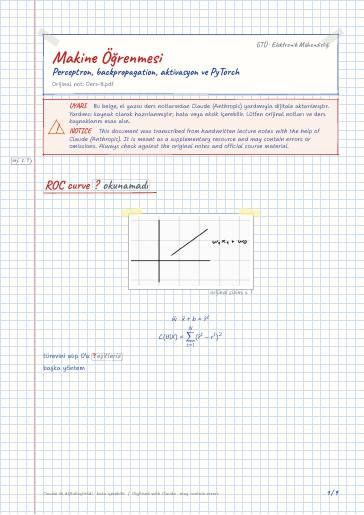

Makine Öğrenmesinin Temelleri · Dijital ders notu
Perceptron, backpropagation, aktivasyon ve PyTorch
- Ders
- Makine Öğrenmesinin Temelleri (ELM472)
- Dönem
- 7. Dönem · 2024–2025 Güz
- Biçim
- PDF · 9 sayfa · 0,2 MB · el yazısı görünümlü LaTeX
- Orijinal not
- Ders-8.pdf

The digital notes were created from the handwritten notes with the help of Claude (Anthropic); they are meant as a supplementary resource and may contain errors. Always rely on the original notes and the official course materials.
Bu notta neler var?
- ROC curve
- sigmoid
- Back Propagation
- Derin öğrenmede katmanlar artar
Notun metni
Düz metin olarak göster (formüller ve çizimler yoktur)
Bu sefer iteratif olarak ilerliyoruz
sonra bunu ekleyeceğiz
geri sararak yapıyoruz
multi layer perceptron
Biz ortogonal olmalarını bekliyoruz
Böyle bir teorem var
yumuşak baz fonksiyonlarıyla mükemmel olarak tahmin edebiliriz
böyle bir sıkıntı var sonsuza giderken türev 0 o yüzden back propagation iyi çalışmaz
bu yüzden genelde softmax en son katmanda kullanılır
ax+b şeklinde göstermiyoruz
negatif tarafta yine türevi 0, dead neuron sorununa yol açıyor
nonlinearity daha az olduğu için daha fazla katman gerekiyor
Derin öğrenmede katmanlar artar
DataScaler() → Standart Scaler()
class ANNmodel(nn.Module) bunun inherit ediyoruz
torch.nn.Linear(in_features, out_features, bias=True, device=None, dtype=None)
net = nn.Sequential
def forward(self,x):
x = x.to(self.device)
out_ = F.one_hot(T.argmax(out,dim=1), num_classes= )
self.optimizer.zero_grad()
y_pred = self.forward(x)
loss = self.loss(y_pred, y)
overfit etmemek için bazı verileri düşürürüz